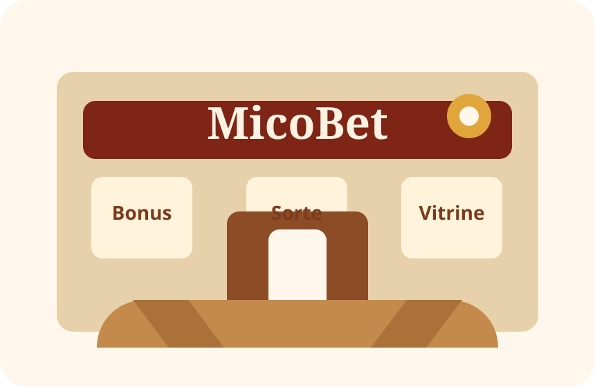
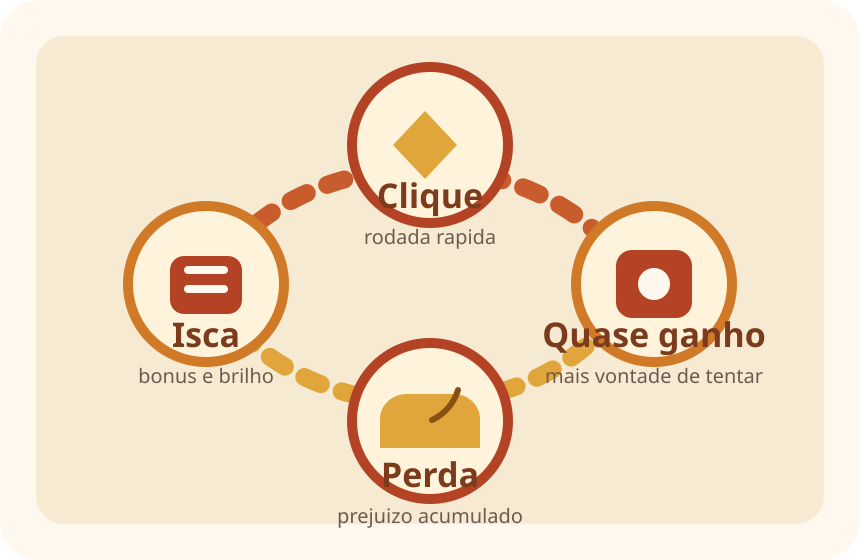
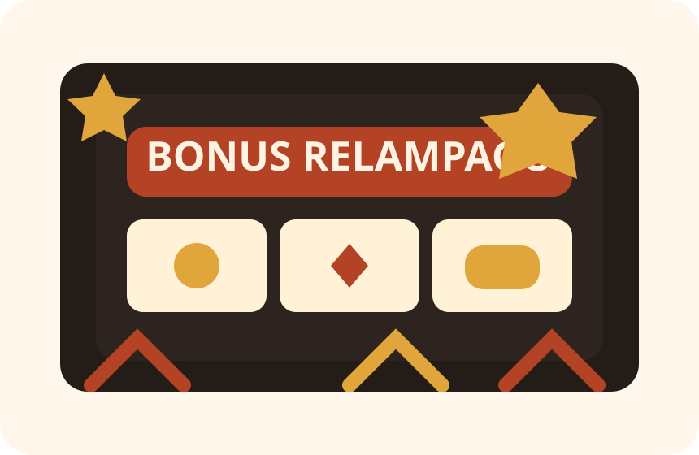

Nasce a MicoBet
A empresa inventa um mascote engracado para transformar risco em entretenimento leve.
Por tras do brilho da casa, a conta quase nunca sorri para quem joga.
Quem somos
A MicoBet nasceu como uma "casa de apostas de brinquedo". O objetivo nao e vender sorte, e sim desmontar a propaganda sedutora que cerca jogos de azar online.

Fundacao ficticia
A empresa inventa um mascote engracado para transformar risco em entretenimento leve.
Promocoes, rodadas curtas e efeitos sonoros passam a importar mais do que a matematica do jogo.
O site vira um material de aula para mostrar que a banca sempre joga com vantagem.
Diretoria ficticia

Fundador imaginario que adora rodadas rapidas, luzes fortes e frases como "agora vai".

Equipe simbolica responsavel por criar notificacoes, bonus e gatilhos para manter o usuario jogando.

Setor ficticio que transforma chance em promessa e prejuizo em "nova oportunidade".
Como a casa vence
O truque nao depende de um grande premio. Ele depende de muitos cliques pequenos, feitos com pressa e embalados por uma sensacao constante de "quase consegui".
Expor o funcionamento psicologico das apostas e estimular debate em sala sobre impulsividade, marketing agressivo e educacao financeira.
Leitura critica, codigo simples, visual marcante e mensagem educativa.